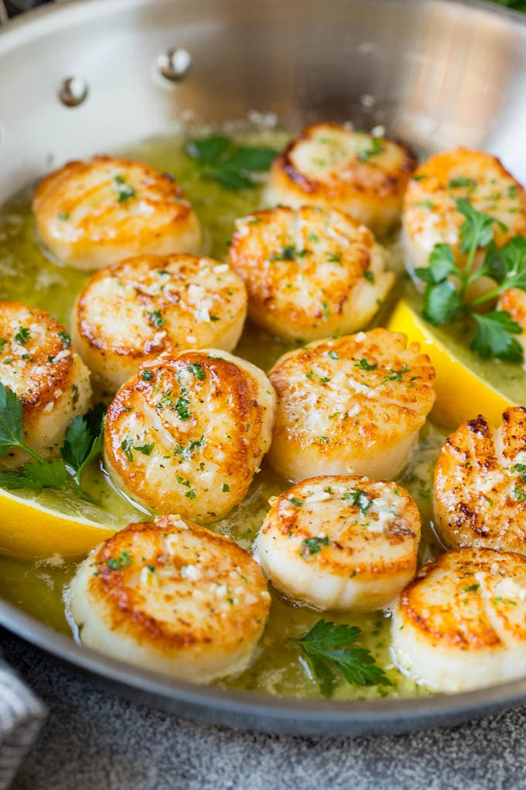

Seared Scallops

Seared scallops are so simple to make, yet they look and taste
like they taste and came from a fancy restaurant! This recipe will
explain step by step how to prepare fresh scallops.
Through a combination of thoroughly drying the scallops and properly
heating the oil, any chef can develop a beautiful golden brown
crust on each scallop.
Ingredients
- 1.25 pounds sea scallops
- 1 tablespoon olive oil
- 3 tablespoons butter
- 1 teaspoon minced garlic
- 2 teaspoons lemon juice
- 2 teaspoons chopped fresh herbs
- lemon wedges
Steps
- Pat the scallops dry on both sides with a paper towel.
Season the scallops on both sides with salt and pepper.
- Heat the oil in a heavy skillet over high heat until it's just smoking.
Add the scallops in a single layer and cook for 2-3 minutes per side.
- Remove the scallops from the pan. Melt
the butter in the pan.
- Add the garlic and cook for 30 seconds. Stir in the lemon
juice and herbs.
- Return the scallops to the pan. Spoon the sauce
over the top. Garnish with herbs and lemon wedges,
then serve immediately.